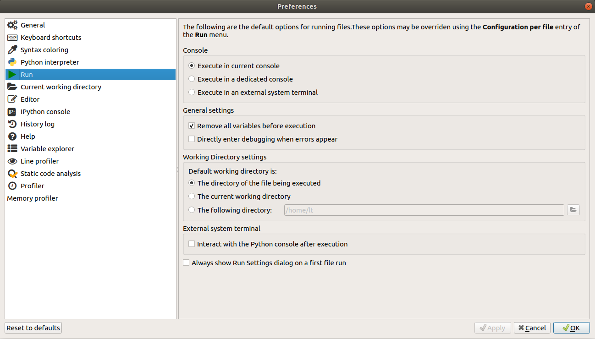

Setup¶
Examples¶
The class notes will often refer to some example Python programs. The compressed file intro_prog_examples.zip contains all the programs. Download this file and unzip it to the directory that you are working in.
Some examples make use of additional data files. These are provided in the data subdirectory, which is included in intro_prog_examples.zip. The examples assume that this directory structure is preserved if you download and unzip the archive, i.e. they will look for the data files in a subdirectory called data.
Software¶
To get the most out of the class, you should have some software installed on your own computer so that you can try out the exercises at home.
Essentials¶
Python 3¶
The main programming language that we will learn about is Python 3. You will need to install it.
Windows or macOS¶
The easiest way to get Python 3 on the most common operating systems (Windows and macOS), is to install a program called Anaconda. Anaconda is a ‘distribution’ of various related pieces of software used in data science. Anaconda installs these separate pieces of software and provides a convenient environment in which to organize, update, and add to them.
Download the installer for the Python 3 version of Anaconda here. The page should detect your operating system automatically, but otherwise click on the relevant tab for Windows or macOS. Additional installation instructions can be found here. If you encounter problems during or after installation, there is some help provided here.
One thing that can occasionally cause problems for Anaconda is the name of the user account on your computer. If your username contains non-English characters (for example ä or ß or something in Arabic, or Devanagari, etc.), or if it simply contains spaces (for example ‘Mildred Bonk’ instead of ‘Mildred.Bonk’ or ‘Mildred_Bonk’), then Anaconda may have trouble understanding which directory your files are stored in. If you encounter error messages about paths or filenames, you could try creating a new user account on your computer with a username that contains only basic English characters and no spaces. Switch to this account before installing and running Anaconda.
Be careful not to download and install Python 2. There are some important differences between Python 2 and 3. At a few points during the class we will note some of these differences just so that you are aware of them. But all of the example programs that we write will be for Python 3, and some may not even work correctly with Python 2.
Linux¶
If you are using a major Linux distribution, for example a recent version of Ubuntu, Python 3 will already be installed on your computer. You can check just to be sure by opening a terminal and entering the following command:
python3 --version
You should see some information about your version of Python 3, if it is installed. If it is not, then you may see an error message or you may be prompted to install it.
However, we will also use several extra ‘packages’ for Python, including a program called Spyder, which you will most probably not have by default on Linux. You will have to install these. You can install these via your normal package manager. Assuming that you are using Ubuntu, you can get them by entering the following command in the terminal:
sudo apt-get install python3-bs4 python3-imageio python3-matplotlib python3-nltk python3-numpy python3-pandas python3-pytest python3-requests python3-seaborn python3-skimage python3-sklearn python3-xlrd
You will be prompted to enter your user password, and you should then see some printouts about the packages being downloaded and installed.
Spyder¶
Python programs are just text files, so we can (and occasionally will) create them in a normal text editor. But this is tedious. An alternative is to use an ‘Integrated Development Environment’ (IDE). An IDE is like a text editor specifically designed for writing computer programs, and provides many useful extra features such as automatically checking for mistakes in the program, and allowing us to run our program immediately to check whether it functions correctly.
There are many IDEs available for Python. For beginners I recommend Spyder.
Windows or macOS¶
Spyder is included by default in Anaconda, so if you have installed Anaconda you do not need to do anything more in order to get it. The user guide for Anaconda here shows how to launch Spyder from Anaconda.
Linux¶
You can install Spyder via your normal package manager. Assuming that you are using Ubuntu, you can get it by entering the following command in the terminal:
sudo apt-get install spyder3
Once installation has finished, you should be able to find Spyder among your applications.
Configuration¶
Once you have launched Spyder, there are a few highly recommended configuration steps that you should carry out in order to be able to follow the class smoothly. Start up Spyder. Go to the Tools menu and select Preferences. You should change a few of the preferences:
Running programs¶

Under the section Run, make sure that the option Remove all variables before execution is selected, and that the section Default working directory is: is set to The directory of the file being executed. Click Apply to make these options take effect. Together, these options ensure that each Python program that we run will start from a clean slate in its own directory and will not be affected by the actions carried out by a previous program or by files contained in some other directory. This is important because we want our programs to work for anyone, and not be dependent on other actions that we have taken before running the program or on the contents of our home folder.

Default working directory¶
Second, outside of Spyder create for yourself a new directory somewhere on your computer. This is the directory where you will save all your notes for the class, and where you will save any extra files that we work with during the class demonstrations. Now return to the Preferences window in Spyder and under the section Current working directory select the following directory and click the button on the right to navigate to the directory that you just created. Again, click Apply once you have done this. This sets the default directory that Spyder will look in when it launches. As long as you save the course materials in this directory, you will be able to find them easily from Spyder. If you now close and restart Spyder you should see that the path to the directory you chose now appears at the top right of the Spyder window.

It is totally fine to create subdirectories within this directory if you would like to organize your notes more neatly. But just remember that each program you write must be stored in the same subdirectory as any additional files that that program requires in order to run. So for example if you write a program called amazing_machine_learning.py and this program reads data from a file called really_big_data.db, then these two files must be located in the same directory in order for your program to work.
Variable explorer¶
Finally, under the section Variable explorer, make sure that the options Exclude capitalized references, Exclude all-uppercase references, and Exclude unsupported data types are all unselected. Again, click Apply once you have unselected them.

This option is less important, but it ensures that when you use Spyder to explore the contents of Python’s ‘memory’, it will show you all the relevant contents, and won’t hide from you things that might be important.
Alternatives¶
If you have trouble installing the software as described above, you can instead opt to write and run your Python programs entirely online. Python Anywhere is a website that provides online storage for your Python programs, along with a helpful text editor and the ability to run your programs in the browser. Sign up for a free account, log in, and visit the ‘Files’ tab to edit your programs or create new ones.
Extras¶
There are a few tools that are useful just for one or two of the topics. Installing these is optional, and you can wait until we get to the relevant topic to decide whether you want to install them.
GitHub¶
GitHub is a platform that allows you to store and publish computer programs. It provides a lot of useful tools for tracking changes to your programs and collaborating with other developers. When we come to learn about GitHub, if you want to follow along you will need your own GitHub account. It is free and you can sign up here.
You can interact with GitHub directly in your web browser, and this is the simplest option if you would just like to get started and try it out. If you want to go further and follow all the examples, then you should also download some software that allows you to interact with GitHub from your computer.
Atom¶
Atom is a text editor produced by the developers of GitHub. Among many other things, it allows you to edit text files (for example Python programs) and send the changes straight to GitHub. You can download it here.
git¶
The program that GitHub works with is called ‘git’. To follow all of the examples and to interact with GitHub from your desktop, you will need git. The steps for installation vary slightly depending on your operating system:
Windows¶
You should first have installed Anaconda as described above. Then search in your start menu for an app called ‘Anaconda prompt’. This will open a command line for Anaconda where you can type in requests to install additional programs. Enter the following command:
conda install git
You will be prompted to answer y to confirm you want to install git. You may also be asked to confirm that you want to update some other programs. You should also answer y to this.
macOS¶
You should first have installed Anaconda as described above. Your Mac might already have git installed. Search for an app called ‘Terminal’. This will open a command line. Enter the following command:
git --version
This command asks git what version it is. If git is already installed, then you will see a short printout telling you what version of git you have installed. If git is not installed, your computer may prompt you to install it instead. Follow the instructions that appear on screen. If your computer does not prompt you to install git, enter the following command:
conda install git
You will be prompted to answer y to confirm you want to install git. You may also be asked to confirm that you want to update some other programs. You should also answer y to this.
Linux¶
You can install git via your normal package manager. Assuming that you are using Ubuntu, you can get it by entering the following command in the terminal:
sudo apt-get install git